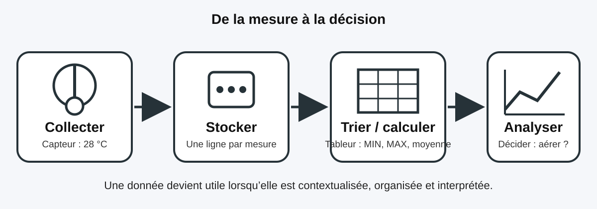

Collecter, trier et analyser des données
Niveau : 5eCompétence : 5e_C1.1Socle : D2, D4
1. De la donnée à l’information
| Notion | Définition | Exemple |
|---|---|---|
| Donnée | Valeur brute recueillie ou saisie. | 28 |
| Information | Donnée interprétée grâce à son contexte. | 28 °C dans la serre à 14 h |
| Jeu de données | Ensemble organisé de plusieurs données comparables. | Températures relevées chaque heure pendant une semaine. |

2. Les quatre étapes essentielles
- Collecter : obtenir les données avec un capteur, un formulaire ou une observation.
- Stocker : enregistrer les données dans un fichier ou une base de données.
- Trier et traiter : classer, filtrer et calculer avec un tableur.
- Analyser : comparer les résultats et en tirer une conclusion.
3. Repères dans un tableur
| Élément | Repère | Exemple |
|---|---|---|
| Colonne | Lettre | B |
| Ligne | Nombre | 3 |
| Cellule | Lettre puis nombre | B3 |
| Formule | Commence par = | =MOYENNE(B2:B9) |
Exemple concret — températures de la serre du collège
Pour connaître la température moyenne des cellules B2 à B9 :
Pour repérer la plus forte valeur :
Pour repérer la plus faible valeur :
Pour connaître la température moyenne des cellules B2 à B9 :
=MOYENNE(B2:B9).Pour repérer la plus forte valeur :
=MAX(B2:B9).Pour repérer la plus faible valeur :
=MIN(B2:B9).
4. Choisir une représentation
- Tableau : lire précisément chaque valeur.
- Diagramme en barres : comparer des catégories.
- Courbe : observer une évolution dans le temps.
- Diagramme circulaire : montrer des parts d’un total, seulement lorsque le total représente 100 %.
5. Erreurs fréquentes
- Confondre une donnée brute et une information contextualisée.
- Écrire
3Bau lieu deB3. - Oublier le signe
=au début d’une formule. - Trier une seule colonne et désorganiser les lignes du tableau.
- Choisir un graphique joli mais inadapté à la question posée.
À retenir
Une donnée n’est utile que si elle est fiable, contextualisée et correctement organisée. Le tableur aide à trier, filtrer, calculer et représenter les données afin de prendre une décision argumentée.
Une donnée n’est utile que si elle est fiable, contextualisée et correctement organisée. Le tableur aide à trier, filtrer, calculer et représenter les données afin de prendre une décision argumentée.